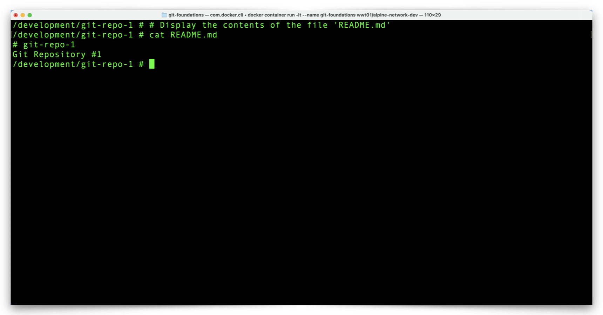

Clone a GitHub Repository to Your Computer
Now it's time for us to work with the files in our GitHub repository, and we start by copying or cloning the repository to our local Docker Container environment.
Copy The Repository SSH URL
We mentioned GitHub supports two transports, HTTPS and SSH. GitHub defaults to HTTPS transport, which adds an extra step (entering your username and password) to the cloning process. The SSH keys we setup in Section 2 allow our Docker Container and GitHub to communicate with each other without repeatedly prompting for credentials.
- Click the green Clone button and notice that GitHub displays an HTTPS URL. Click the SSH link to change the display to an SSH URL.

- Click the Copy icon, just to the right of the SSH URL, to store the URL on your clipboard.

Clone & Review The Repository
-
Return to your Docker Container prompt, type the command
git clone, paste your repository URL, as shown in the example below (your repository URL will be different than the example in the in the following code block), and press your Return/Enter key:# Download a new copy of a GitHub repository to a local system (our Container, in this case) git clone git@github.com:your-repository-url/git-repo-1.gitAttention
You will likely see a prompt which asks you to confirm the authenticity of GitHub's SSH RSA fingerprint. You may safely type
yesand press Return/Enter to continue.The result of the
git clonecommand should look something like this:
-
List your directory contents to view your repository folder, git-repo-1, with the following command:
# List the contents of the current directory in long format ls -l
-
Change to your repository directory and display your current working directory with the following commands:
# Change the current working directory from development to /development/git-repo-1 cd git-repo-1# Display the current working directory pwd
-
Let's take a quick look at the contents of your repository directory, including the hidden files, with the following command.
# List the contents of the current directory, including hidden files, in long format ls -la
-
Notice that both of the files in your GitHub repository (.gitignore and README.md) are now in our Docker Container.
-
View the contents of the README.md file with the following command:
# Display the contents of the file 'README.md' cat README.md
-
There is one item in our repository directory which isn't in our GitHub repository, the .git directory. This directory contains all of the details about your local repository and you should rarely, if ever, have to interact with these files. Just to see what the contents of this folder look like, use the following command:
# List the contents of the .git directory in long format ls -l .git
We now have a copy of our GitHub repository in our Docker environment. Before we make changes to our local copy of the Git repository, we need to configure a few local Git settings. Click the link below to continue:
Next Section > View & Configure Local Git Settings on Your Computer